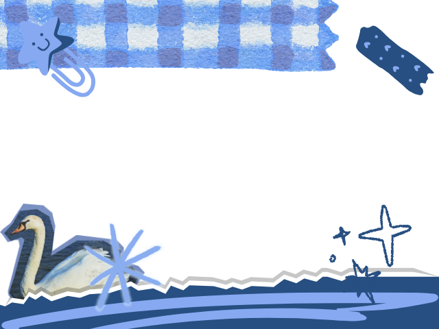

GESTURE GUIDE:
✌️ peace sign → capture photos x 4
👍 thumbs up → download photos
👆 point up → change frames (x/4)
✊ fist → retake photos
👍 thumbs up → download photos
👆 point up → change frames (x/4)
✊ fist → retake photos